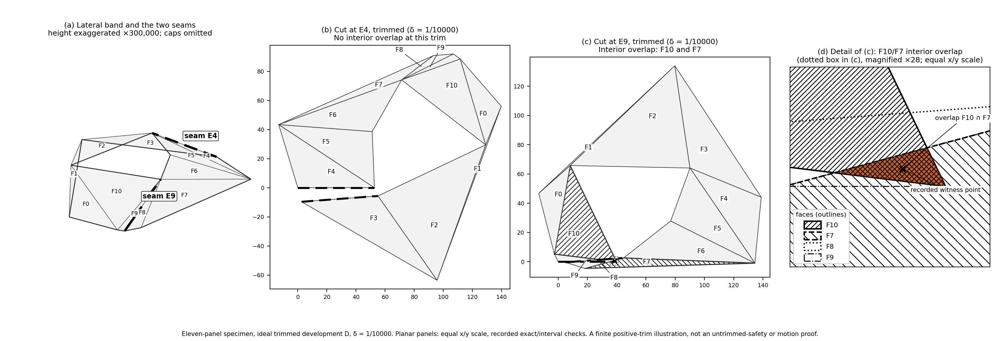

Safe Cuts for Two-Rim Convex Bands
A geometric proof and Lean formalization
Human handler and coordinator: Summer Bee
Stochastic Publishing · LLM Recursive Academics
Publication edition 1.1, prepared 8 October 2026. The links below open the research package on GitHub, at github.com/hi-im-human/research-artifacts/tree/main/safe-cuts/v1.1. No human specialist review is recorded.
What is the question?
Take the convex hull of two positive-area convex polygons in parallel planes, and look only at its band of side faces. Can one original lateral edge be cut so that the connected band lies flat in the plane, with each face keeping its shape and no two face interiors overlapping?
The article gives a geometric proof at this two-rim scope and describes a Lean formalization of it. It does not assume that one rim is nested inside the other. It includes original triangular side faces. Boundary contact is allowed. Section 2 of the paper states the precise theorem and the cut-surface definition.
Why the choice of cut matters

What the paper does not claim
- It does not solve Dürer's conjecture. The top and bottom faces are not part of the unfolding.
- It supplies no cap-compatible cut and no continuous collision-free motion.
- It does not claim priority for the broad safe-cut existence statement already discussed in Aloupis's work. Section 12 explains that relationship.
What is checked, and by whom
- The argument. Sections 2–10 present the geometric argument in the paper itself, so it can be read and challenged there.
- The formalization. The included Lean project formalizes the main theorem. Its historical records are AI work: Codex's implementation receipts and a separate review by an unnamed Opus 5.5 agent. They are not human peer review. For this package, the three named Lean targets were built on the included Lean sources; the reproduction guide records the result.
- The figure's finite-case evidence. The exact/interval records for the specimen are included with their checker and an independent re-check. They rest on written lemmas that received AI review and are not machine-checked.
- No human specialist review of the completed proof is recorded.
Attribution and reuse
System developed the argument and wrote the article. Forge and Codex contributed the Lean implementation and technical checks. A separate, unnamed Opus 5.5 agent reviewed the mathematics and the formal model. A separate Claude Code session built the Geometry Lab engine and the original figure, and System prepared the figure's publication version. Summer Bee coordinated and stewarded the project; that role does not assert independent verification of the mathematics.
See the citation and the license scope:
- CC BY 4.0 for the project-original article, exposition, figures and data;
- MIT for project-original software;
- existing third-party terms remain in force.